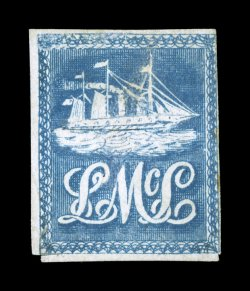
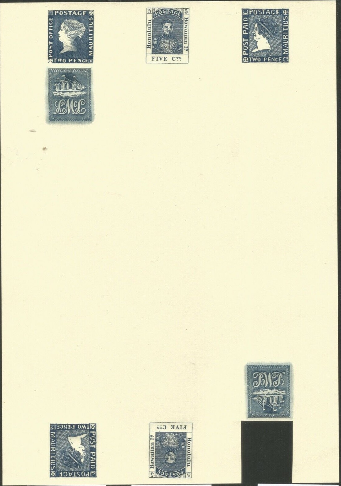
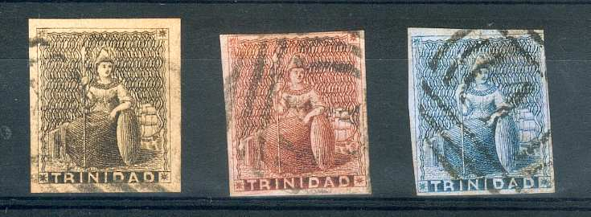
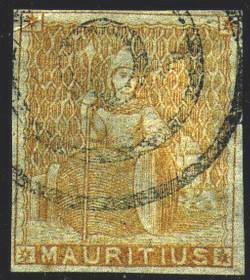
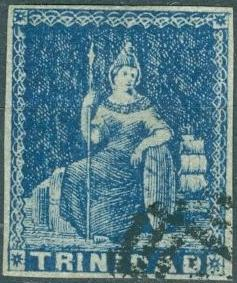
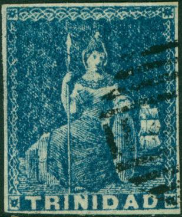
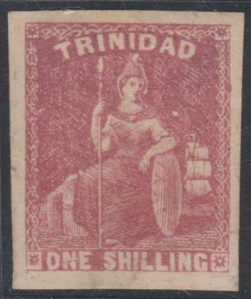
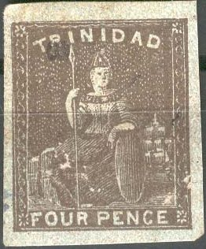

{kind=link}


Return To Catalogue - Trinidad 1869-1914 - Trinidad and Tobago
Note: on my website many of the
pictures can not be seen! They are of course present in the
catalogue;
contact me if you want to purchase it.
(5 c) blue
This stamp was issued on the steamship Lady McLeod, it carried letters from San Fernando de Trinidad to Port of Spain (the capital of Trinidad). This privately issued stamp is the earliest stamp used in any British Colony and was issued in April 1847.
Value of the stamps |
|||
vc = very common c = common * = not so common ** = uncommon |
*** = very uncommon R = rare RR = very rare RRR = extremely rare |
||
| Value | Unused | Used | Remarks |
| 5 c | RRR | RRR | |
I have only seen this stamp cancelled with the penstrokes as shown above. Cancelling devices don't seem to have been used on these stamps. They were either left uncancelled, received a pencancel or simply a piece was torn of to make them invalid. If my information is correct only 26 unused stamps are still in existence.
A forgery of this stamp on a letter:
I have seen two of these letters, with the same handwriting and the same adress, example of a forgery of such a letter:
(Forgery on a similar letter as above)
And a forgery made by Peter Winter:
(Peter Winter forgery, produced somewhere in the 1980's)

Could the above forged letter also have been made by Peter Winter?
Literature: 'The Private Ship Letter Stamps of the World, Part 1 The Caribbean ' by S.Ringström and H.E.Tester.
This forged cancel "TRINIDAD MY 27 1851" can be found
in the Fournier Album of Philatelic Forgeries. I don't know on
which stamps Fournier applied this forged cancel.
(1 Penny) red (1 Penny) blue (1 Penny) brown (1 Penny) grey
A locally printed 1 p blue exists with straight diagionally crossing background lines:
The values in grey and red also exist printed locally (due to stamp shortages) in a very poor quality:
Similar stamps exist for Barbados and Mauritius.
Perforated
(1 Penny) red
HALF PENNY on (1 Penny) violet ONE PENNY on (1 Penny) red
Bisected stamp:
Value of the stamps |
|||
vc = very common c = common * = not so common ** = uncommon |
*** = very uncommon R = rare RR = very rare RRR = extremely rare |
||
| Value | Unused | Used | Remarks |
| Imperforate | |||
| (1 p) red | RRR | RR | |
| (1 p) blue | R | RR | |
| (1 p) brown | R | RR | |
| (1 p) grey | RR | RR | |
| Locally printed stamps | |||
| (1 p) red | RR | RRR | |
| (1 p) blue | RRR | RRR | |
| (1 p) grey | RRR | RRR | |
Perforated |
|||
| (1 p) red | RR | *** | No watermark |
| (1 p) red | R | ** | Watermark 'CC Crown' |
Surcharged |
|||
| 1/2 p on (1 p) lilac | *** | *** | Watermark 'CC Crown', with watermark 'CA Crown': RR |
| 1 p on (1 p) red | R | *** | Watermark 'CA Crown' |
Cancels:
Numeral cancels '1' and '2', circular date cancel and towncancel
'TRINIDAD'
Forgeries exist, examples:

There is a coloured line around these forgeries. Inside a white space can be found, before the background pattern starts. The cancel (always?) consists of a numeral cancel with '1' in the center. I've also seen the color grey of the above forgery set. These forgeries are often attributed to the forger Panelli, however they might have been made by Oneglia and only sold by Panelli. I've also seen these forgeries on bluish paper. The forger also made similar forgeries for Mauritius and Barbados:

(Trinidad forgery next to a similar forgery for Mauritius and
Barbados)
Some other blotchy forgeries:
(There should be a white outline around the hair, which is absent
in the above forgery)
Another forgery:

Forgeries, note the position of the foot, which is too high with
respect to the "N" of "TRINIDAD".

Another blue forgery
Perforated brown forgery with too thin lettering and blotchy
appearance.
Another black forgery.
Other primitive blue forgery, first image reduced size. The
border is very strange.
A few very primitive forgeries.
Part of the page from the Fournier Album
In 'The Fournier Album of Philatelic Forgeries' a forgery of the red stamp can be found (imperforate) sold by Fournier. Apparently this forgery was not made by him, the text reads: 'Faux fabriques en Italie en 1920-1921 par la Maison V.E.U. à Gênes par un nouveau procédé' (forgeries made in Italy in 1920-21 by the house of V.E.U. in Genova with a new technique. So these forgeries were produced after Fournier had died.
4 p lilac 4 p grey 6 p green 1 Sh grey 1 Sh lilac 1 Sh orange Surcharged
'1 d.' (red or black) on 6 p green (exists bisected as in the pictures above)
For the specialist: these stamps have no watermark or watermark 'CC crown' or 'CA crown'. The perforation varies from 11 1/2 to 14.
Value of the stamps |
|||
vc = very common c = common * = not so common ** = uncommon |
*** = very uncommon R = rare RR = very rare RRR = extremely rare |
||
| Value | Unused | Used | Remarks |
| Imperforate, no watermark | |||
| 4 p lilac | RRR | RRR | |
| 6 p | RRR | RRR | |
| 1 Sh lilac | RRR | RRR | |
| Perforated, no watermark | |||
| 4 p lilac | RR | RR | |
| 6 p | RRR | RR | |
| 1 Sh grey | RRR | RRR | |
| Perforated, watermark 'CC Crown' | |||
| 4 p lilac | RR | R | |
| 4 p grey | RR | *** | |
| 6 p | RR | *** | |
| 1 Sh lilac | RRR | R | |
| 1 Sh orange | RR | *** | |
| Manually surcharged '1d' (in red) on 6 p | *** | *** | Surcharge in black: RRR |
Perforated, watermark 'CA Crown' |
|||
| 4 p grey | RR | R | |
Cancels
Numeral "1" cancel and "TRINIDAD" date cancel
(With "TOO-LATE" cancel)
Forgeries
Some forgeries seem to exist with "TRINIDAD" placed too low; there are ornaments above this words which do not exist in the genuine stamps. Examples:

Note the strange cancels on these stamps. Also note the strange
"C" in the "SIX PENCE" value.
Other forgeries:
I've also seen this forgery with a cancel consisting of a lozenge
with paralell lines inside, note the strange shape of the
"S" of "SHILLING"
Two blur 1 Sh forgeries.
Forgery of the 1 Sh value with the "S" of
"SHILLING" different.

Other forgeries
For issues Trinidad from 1869 to 1914 click here.
{kind=link}
{kind=link}
{kind=link}
{kind=link}
{kind=link}
{kind=link}
{kind=link}
{kind=link}
{kind=link}
{kind=link}
{kind=link}